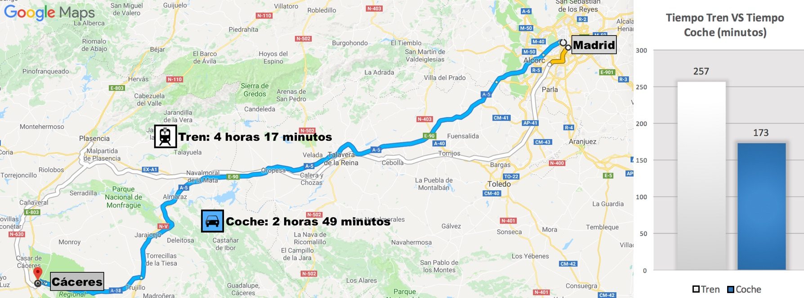
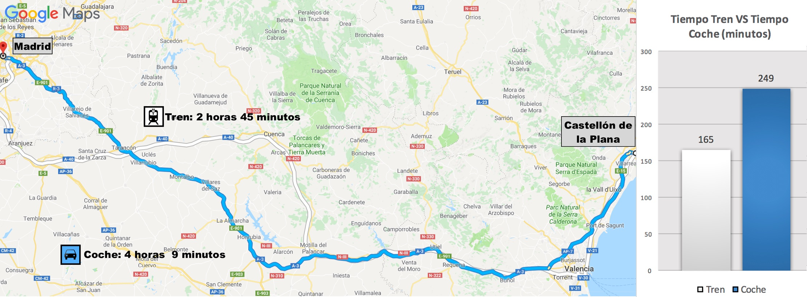

¿Está bien comunicada tu ciudad?
El grado de conectividad de una ciudad con respecto a otras dentro del mismo territorio es un factor clave para el desarrollo de su economía y su cultura. La inversión en infraestructuras de calidad facilita el movimiento de personas e intercambio de bienes y servicios, y en consecuencia la de ideas y oportunidades. Por ejemplo, ser capaz de viajar en AVE de Valencia a Madrid en 1 hora y 42 minutos abre un abanico de nuevas posibilidades para los habitantes de ambas ciudades que pasan a ser casi vecinos. En este estudio se ha intentado dar una respuesta fundamentada a la siguiente pregunta:
¿Por qué este estudio?
- Realizar un análisis cuantitativo de la situación del transporte en Extremadura, y en particular de su red ferroviaria. Numerosos artículos en prensa y plataformas como Milana Bonita han tratado de poner en evidencia lo precarias que son las condiciones del servicio. Pero obviando todos los retrasos, interrupciones y cancelaciones, ¿cómo de precarias son estas condiciones con respecto a lo que ocurre en otras ciudades de España?
- Resaltar las bondades del periodismo de datos. Cada día en mayor medida en los periódicos se publican artículos ambiguos, con sesgos, que tienen más de opinión subjetiva que de información contrastada. Los datos vienen a ofrecer una base de objetividad que permita al lector formarse un criterio y sacar conclusiones más ajustadas sobre el asunto que en particular.
¿Cómo medir si una ciudad está bien conectada?
En este estudio se ha considerado que el grado de conexión de una ciudad con la capital del país es un buen indicador sobre el nivel de accesibilidad de la misma. Este hecho cobra aún mayor relevancia en el caso de España, al coincidir la localización de Madrid con el centro geográfico del territorio.
Dicho esto, ¿cómo medimos esa calidad en la conexión por tren entre la ciudad en cuestión y Madrid? Para cuantificar de manera sencilla este factor, se ha comparado el tiempo que se tarda en hacer el trayecto en tren con lo que tardaríamos si lo realizamos en coche.
Se parte de la premisa de que la calidad del transporte por carretera es mucho más uniforme a lo largo del territorio, y por tanto un buen punto de referencia con el que evaluar la infraestructura ferroviaria. Todas las ciudades estudiadas tienen acceso por autovía o autopista, con un límite de velocidad equivalente, y se han considerado mediciones de tiempo en las que no hay congestión de tráfico. Además, la duración del trayecto en coche es dependiente de la distancia geográfica y de la dificultad del terreno, al igual que ocurre con el tren.
De manera un poco más formal, la calidad de la conexión por tren de una ciudad \(C\) con Madrid equivale a la duración del trayecto en tren dividido por la duración del mismo recorrido por carretera: $$T_{C} = {Tiempo_{Tren} (C, Madrid) \over Tiempo_{Carretera} (C, Madrid)}$$
Dos ejemplos: Cáceres y Castellón de la Plana
Veamos ahora a través de dos ejemplos qué es lo que intenta captar este indicador de calidad de tren, y cómo se puede calcular e interpretar.
A continuación podemos observar sobre el mapa el recorrido a realizar por carretera (línea azul) y tren (línea blanca) entre Cáceres y Madrid. Los respectivos tiempos de viaje se encuentran escritos sobre el mapa y están representados en minutos en el diagrama situado a la derecha.
Podemos cuantificar la calidad del tren Cacereño de la siguiente manera:
$$T_{Cáceres} = {Tiempo_{Tren} (C, Madrid) \over Tiempo_{Carretera} (C, Madrid)} = { 173 \over 257} = 0.6732$$El hecho de que el valor de este indicador sea menor que uno nos está indicando que el recorrido por carretera es preferible respecto al correspondiente por tren, algo que ya habíamos deducido al ver las figuras y los datos temporales. Generalizando, cuanto menor sea este índice de calidad, menos compensará realizar el viaje en tren y más recomendable es optar por el viaje por carretera. Se puede concluir que la calidad del tren que conecta Madrid con Cáceres es baja.
Veamos ahora el mismo análisis aplicado a Castellón de la Plana:
 $$T_{Castellon} = {Tiempo_{Tren} (C, Madrid) \over Tiempo_{Carretera} (C, Madrid)} = { 249 \over 165} = 1.5091$$En esta ocasión, el valor indicador supera ampliamente la unidad. El tren se revela como un medio de transporte más conveniente para viajar desde Madrid a Castellón de la Plana. Se puede concluir por tanto que la conexión en tren tiene buena calidad. Comparando ambos indicadores \(T_{Cáceres} = 0.6732 < 1.5091 = T_{Castellon}\) se ve que la calidad del tren castellonense es mayor que la del cacereño.
El Estudio al Completo
Sabiendo cómo calcular si una ciudad está bien conectada por tren, a continuación se describe el protocolo seguido durante este estudio:
- Se parte del conjunto de las capitales de provincia y de comunidades autónomas de acuerdo a la lista disponible aquí. Evidentemente, se han eliminado aquellas que no se encuentran en la península por no tener enlace directo vía tren con la capital.
- Para cada una de las ciudades \(C\) en la lista anterior, se ha calculado su indicador \(T_{C}\) para reflejar la calidad de su trayecto en tren a Madrid.
- En caso de existir varias alternativas de tren disponibles para viajar de la ciudad a Madrid, se ha elegido siempre la más rápida. Por ejemplo si el trayecto Madrid - Zaragoza se realiza en AVE en 1 hora y 25 minutos, o en 1 hora y 48 minutos haciendo paradas adicionales, para el estudio se tomará la primera opción.
- No se han tenido en cuenta la frecuencia de los trayectos en tren disponibles entre la ciudad y Madrid.
- No se han considerado las incidencias en la vía o retrasos. Ciertos trayectos como el Cáceres-Madrid sufren múltiples problemas de este tipo pero por simplicidad del estudio se han descartado.
- No se han tenido en cuenta otros medios de transporte. Por ejemplo, ciertas capitales de provincia están conectadas por avión con Madrid.
Fuentes de datos
Todos los datos de duración de trayectos han sido obtenidos para búsquedas realizadas el Viernes 29 de Diciembre de 2017. A continuación se detallan las fuentes utilizadas para obtener los datos sobre tiempo de trayecto y distancias entre ciudades:- https://www.distancecalculator.net/ para el cálculo de distancias absolutas entre ciudades
- Google Maps para el cálculo de distancias por carretera, y tiempo de ruta en coche. Es importante señalar que todos estos valores se han obtenido para intervalos del día en los que no había congestión en la carretera ni incidentes de otro tipo.
- La Web de Renfe para el cálculo de tiempos de ruta en tren. Como ya se ha señalado, en caso de existir distintas alternativas para ese mismo día se escogió la más rápida.
Resultados
Finalmente, hemos representado los indicadores calculados para las 48 ciudades consideradas en el estudio en el siguiente gráfico:

Conclusiones
Las dos capitales de provincia de Extremadura, Cáceres y Badajoz, y su capital Mérida encabezan la lista de ciudades peor conectadas por tren con Madrid. Son resultados que en conjunto reflejan de manera concluyente que el tren en Extremadura es lento y precario.
- Todas las ciudades con indicadores bajo el umbral marcado por la línea roja horizontal tienen trayectos a Madrid por tren que son más lentos que los correspondientes realizados por carretera. En total se trata de 16 ciudades sombreadas en rojo a la izquierda (33% de las capitales), para las que la red ferroviaria necesita mejorar.
- Las ciudades comprendidas entre la línea roja horizontal y la verde (un total de 24) presentan trayectos en tren que son preferibles a los equivalentes por carretera.
- Finalmente sobre la línea verde horizontal, en la parte derecha del gráfico, se encuentran las capitales con los índices más altos en calidad ferroviaria, donde realizar el trayecto en tren es al menos el doble de rápido que hacerlo en coche. Se trata principalmente de ciudades conectadas por AVE. Estas cifras ponen en relieve la eficiencia de este medio de transporte. Ejemplos son Ciudad Real, Córdoba o Barcelona.
En vista de los resultados, y dada la muy significativa diferencia en las puntuaciones obtenidas entre las ciudades en las primeras y últimas posiciones de la lista, (a veces de entre tres y cuatro órdenes de magnitud para los casos más extremos como por ejemplo Cáceres con \(T_{Cáceres} = 0.6732\) y Zaragoza con \(T_{Zaragoza} = 2.3457\)), queda de manifiesto la urgencia de realizar inversiones encaminadas a mejorar ciertas secciones de la red ferroviaria nacional y así subsanar estos vacíos territoriales que los datos revelan presentes a fecha de hoy en nuestro país.
Una red de transporte mejor balanceada y equitativa a lo largo de todos los territorios del estado es un elemento de progreso que beneficia a cada territorio en particular y a España en su conjunto. Una buena conexión ferroviaria con Madrid facilita el intercambio entre consumidores y productores de bienes y servicios. Con su aeropuerto, Madrid es además una puerta hacia otros países del mundo, tanto de entrada de extranjeros, como de salida de residentes. En definitiva, una conexión por tren de calidad ofrece al ciudadano un nuevo escenario más acorde a las exigencias del panorama actual donde estar bien conectados dispara las posibilidades del desarrollo económico y social.
Todos los datos
Para finalizar se incluyen los datos obtenidos para cada una de las ciudades incluídas en el estudio, ordenadas de acuerdo a su indicador de calidad ferroviaria \(I_C\). Si detectas algún error en los mismos, o deseas incluir una nueva ciudad en la lista, no dudes en escribirme un email para subsanarlos o añadir nueva información.
| Ciudad | Dis. Geográfica (km) |
Dis. Carretera (km) |
Tiempo Coche (min) |
Tiempo Tren (min) |
\(T_C\) Tren vs Coche (min) |
|
|---|---|---|---|---|---|---|
| 1 | Cáceres | 251 | 297 | 173 | 257 | 0.6732 |
| 2 | Badajoz | 328 | 404 | 220 | 322 | 0.6832 |
| 3 | Mérida | 281 | 342 | 201 | 277 | 0.7256 |
| 4 | Lugo | 431 | 505 | 278 | 383 | 0.7258 |
| 5 | Teruel | 220 | 302 | 191 | 255 | 0.7490 |
| 6 | Soria | 182 | 227 | 133 | 177 | 0.7514 |
| 7 | San Sebastián | 353 | 452 | 256 | 333 | 0.7688 |
| 8 | Jaén | 294 | 331 | 185 | 237 | 0.7806 |
| 9 | Bilbao | 323 | 397 | 239 | 304 | 0.7862 |
| 10 | Ávila | 87 | 114 | 79 | 93 | 0.8495 |
| 11 | Almería | 413 | 551 | 307 | 358 | 0.8575 |
| 12 | Pontevedra | 474 | 606 | 344 | 381 | 0.9029 |
| 13 | Burgos | 215 | 245 | 138 | 150 | 0.9200 |
| 14 | Vitoria-Gasteiz | 285 | 356 | 213 | 229 | 0.9301 |
| 15 | Murcia | 349 | 399 | 220 | 232 | 0.9483 |
| 16 | Logroño | 251 | 327 | 203 | 208 | 0.9760 |
| 17 | Granada | 361 | 420 | 254 | 248 | 1.0242 |
| 18 | Orense | 408 | 506 | 280 | 265 | 1.0566 |
| 19 | Santander | 339 | 458 | 259 | 244 | 1.0615 |
| 20 | Santiago de Compostela | 487 | 608 | 344 | 315 | 1.0921 |
| 21 | Pamplona | 317 | 389 | 228 | 201 | 1.1343 |
| 22 | Salamanca | 177 | 220 | 132 | 110 | 1.2000 |
| 23 | Huelva | 450 | 616 | 328 | 258 | 1.2713 |
| 24 | La Coruña | 509 | 597 | 303 | 235 | 1.2894 |
| 25 | Cádiz | 488 | 652 | 354 | 266 | 1.3308 |
| 26 | Oviedo | 373 | 451 | 374 | 268 | 1.3955 |
| 27 | León | 288 | 343 | 199 | 136 | 1.4632 |
| 28 | Castellón de la Plana | 314 | 423 | 249 | 165 | 1.5091 |
| 29 | Albacete | 224 | 257 | 144 | 93 | 1.5484 |
| 30 | Toledo | 68 | 73 | 53 | 33 | 1.6061 |
| 31 | Alicante | 360 | 421 | 240 | 149 | 1.6107 |
| 32 | Palencia | 190 | 265 | 153 | 92 | 1.6630 |
| 33 | Huesca | 336 | 384 | 226 | 133 | 1.6992 |
| 34 | Sevilla | 391 | 528 | 312 | 179 | 1.7430 |
| 35 | Gerona | 573 | 699 | 374 | 213 | 1.7559 |
| 36 | Guadalajara | 52 | 61 | 45 | 25 | 1.8000 |
| 37 | Zamora | 210 | 259 | 162 | 90 | 1.8000 |
| 38 | Cuenca | 139 | 168 | 101 | 55 | 1.8364 |
| 39 | Tarragona | 424 | 545 | 292 | 155 | 1.8839 |
| 40 | Valencia | 303 | 357 | 200 | 104 | 1.9231 |
| 41 | Málaga | 416 | 529 | 310 | 153 | 2.0261 |
| 42 | Lérida | 387 | 461 | 247 | 121 | 2.0413 |
| 43 | Barcelona | 506 | 625 | 343 | 165 | 2.0788 |
| 44 | Valladolid | 162 | 196 | 138 | 65 | 2.1231 |
| 45 | Córdoba | 296 | 395 | 245 | 110 | 2.2273 |
| 46 | Zaragoza | 273 | 314 | 190 | 81 | 2.3457 |
| 47 | Ciudad Real | 161 | 186 | 136 | 53 | 2.5660 |
| 48 | Segovia | 68 | 97 | 70 | 27 | 2.5926 |